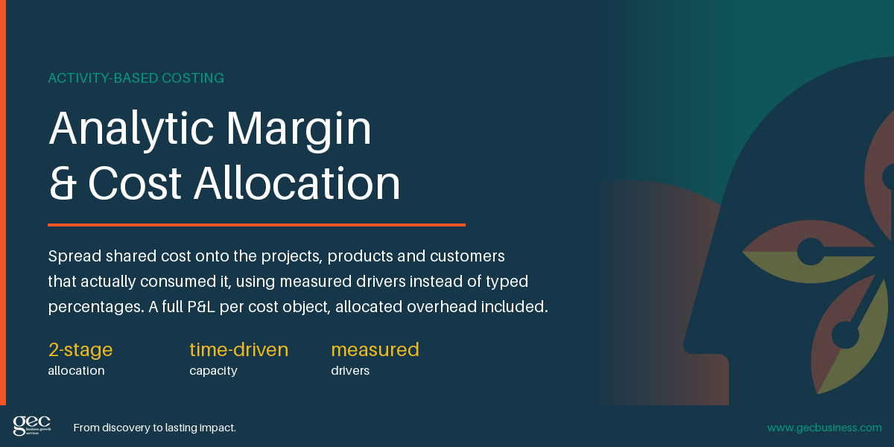

What it does
Odoo's analytic accounting tells you where a cost was booked. This tells you where it belongs. Shared cost — a delivery team, a support desk, an overhead pool — is spread onto the projects, products and customers that consumed it, measured from live records rather than typed percentages. The result is a full P&L per cost object with allocated overhead included, every charge traceable back to the driver that caused it, and a dashboard that measures the company against a software-vendor benchmark.
|
Two stages
Resources to activities, activities to cost objects — with a cascade
for service departments that charge each other.
|
Real drivers
Hours, tickets, deliveries, invoice lines — counted from live records as
the work is registered, not in a month-end spreadsheet.
|
Idle capacity
Time-driven ABC keeps the cost of capacity nobody consumed on the cost
centre, instead of making every product look expensive.
|
|
P&L by function
Read cost by what it bought, or by what it was for: Cost of Sales,
R&D, Sales & Marketing, G&A.
|
Margin at completion
Each project's forecast margin with overhead to come, backlog,
unbilled work and cash margin — before it turns into a loss.
|
Proof on every card
Click any dashboard figure to see its formula, this period's numbers
and the records behind them.
|
What you get